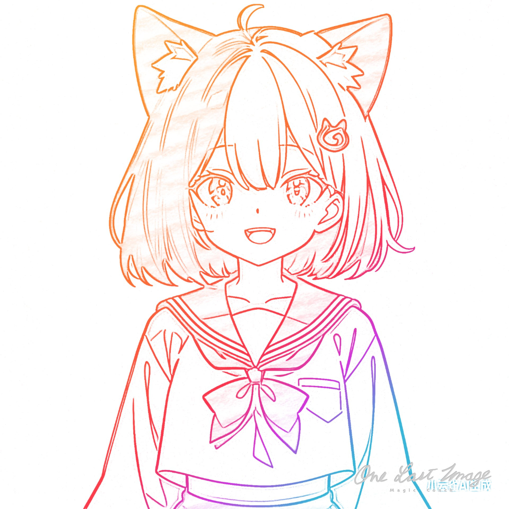

屏幕投影区域
用于投放游戏、PPT或其他内容
屏幕投影区域
用于投放游戏、PPT或其他内容
[日常+互动] AI心翎
[编程+其他] 工具人
---
当前阶段工具人代播
---
"Fake it till you make it"
-- 定义 --
> 时间限制？8/16/24h
| 试试...32h解决😭😭😭
> 怎么才算`学会`？（主包视角）
1. [最小实现] 跑通 `quick-start`
2. [框架概念] 知道怎么查 `reference`
-- 其他要求 --
只吃官方文档 | 可提问拷打主包
[学习] k8s小学习
+23.5+2h
时间进度：25.5h/24h
[学习] learn CC
14.Cron Scheduler
15.Agent Teams

vup: 心翎XinLing (号不创了)